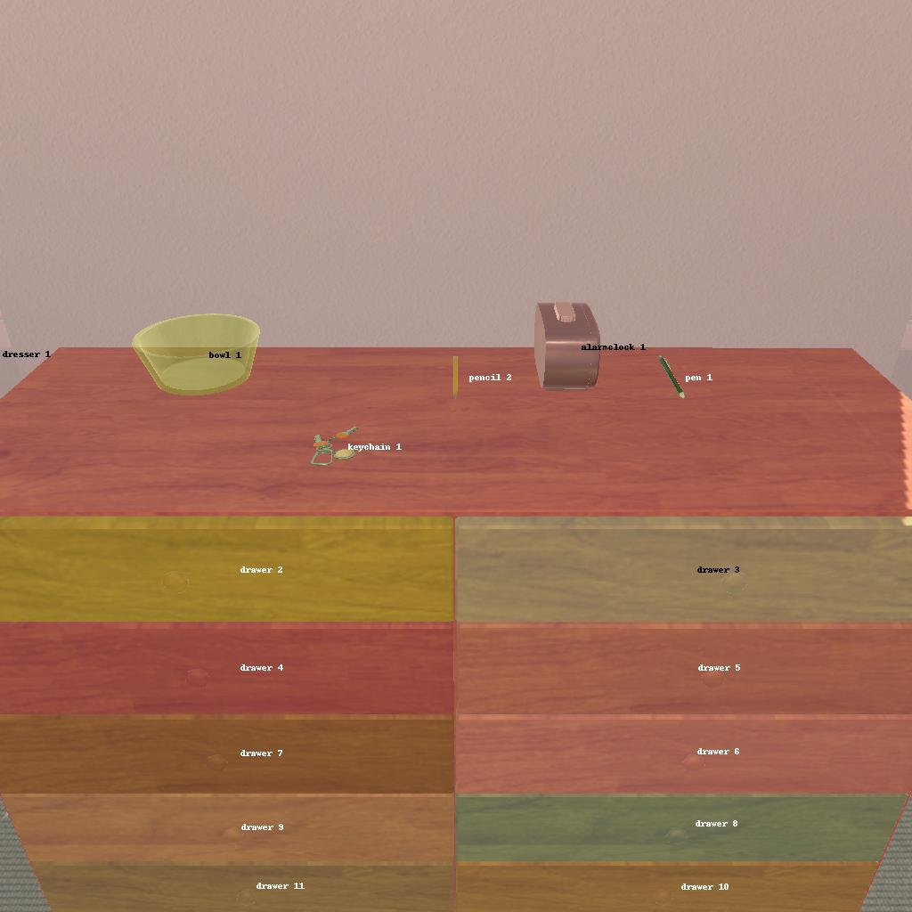

---------------------------------------------------------task: 0---------------------------------------------------------
--------------------------------------------------------------------------------------------------------------------------------------------------------------------
--------------------------------------------------------------------------------------------------------------------------------------------------------------------
Step:--------------------------------------------------------------------------4-------------------------------------------------------------------------------
----------------------------------------
VLM Prompt:
Image1:
Image2:
**Instruction**
1. Analyze the provided image to identify all visible household objects, focusing on those relevant to the task description "examine the alarmclock with the desklamp."
2. Use the analysis of the image and the task hint "The agent must find an object of the desired type, locate and turn on a light source with the desired object in-hand." to answer the question: what is the most reasonable action in the choices for the task description "examine the alarmclock with the desklamp"?
4. Decide and write the answer using the template: The answer is: (i): , where i is the real number. If there is no desired object in the image, search every place based on **Initial Observation** to find the object. And if no one is exactly correct, choose a similar answer.
**Initial Observation**
You are in the middle of a room. Looking quickly around you, you can see bed (1), sidetable (1), drawer (1-11), dresser (1), safe (1), laundryhamper (1), garbagecan (1)
**Answer Choices**
(1): go to bed 1
(2): go to drawer 1
(3): go to dresser 1
(4): go to drawer 3
(5): go to drawer 4
(6): go to drawer 5
(7): go to drawer 6
(8): go to drawer 7
(9): go to drawer 8
(10): go to drawer 9
(11): go to drawer 10
(12): go to drawer 11
(13): go to safe 1
(14): go to laundryhamper 1
(15): go to garbagecan 1
(16): open drawer 2
(17): close drawer 2
(18): examine drawer 2
**Answer**
Let's think step by step by following the instructions.
----------------------------------------
----------------------------------------
Original Response:
First, we need to identify all visible household objects relevant to the task description "examine the alarmclock with the desklamp." From Image 1, we can see a desklamp labeled "desklamp 1" on the sidetable labeled "sidetable 1." There is also a bed labeled "bed 1" and a pillow labeled "pillow 1." There is no visible alarm clock in this image. In Image 2, we can see an alarm clock labeled "alarmclock 1" on the dresser labeled "dresser 1." There are also drawers labeled from "drawer 2" to "drawer 11," a bowl labeled "bowl 1," pencils labeled "pencil 1" and "pencil 2," and a keychain labeled "keychain 1."
Next, based on the task hint that the agent must find the alarm clock, locate and turn on a light source with the desired object in-hand, we can deduce that the agent should first find and grab the alarm clock and then use the desklamp to examine it.
Based on the Initial Observation, the desklamp is not in any of the drawers, so we can eliminate the choices that involve going to or examining drawers (2-12, 16-18). There is also no need to go to the bed (1), safe (1), laundry hamper (1), or garbage can (1) as they are not relevant to the task.
Given the analysis above, the most reasonable action from the choices provided would be to go to the dresser where the alarm clock is located.
The answer is: (3): go to dresser 1.
----------------------------------------
----------------------------------------
>>> Refine Original VLM Response and Get Pure Action: go to dresser 1
----------------------------------------
-----------------------------------------------------------------
Running time: 13.531554937362671 seconds
Total Money: 0.13129
-----------------------------------------------------------------
-----------------------------------------------------------------
Text Observation:You arrive at loc 3. On the dresser 1, you see a bowl 1, a alarmclock 1, a keychain 1, a pen 1, and a pencil 2.
-----------------------------------------------------------------
UNSUCCEED